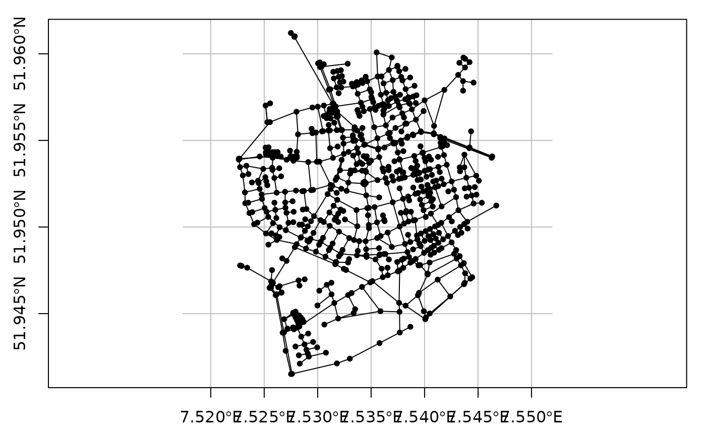
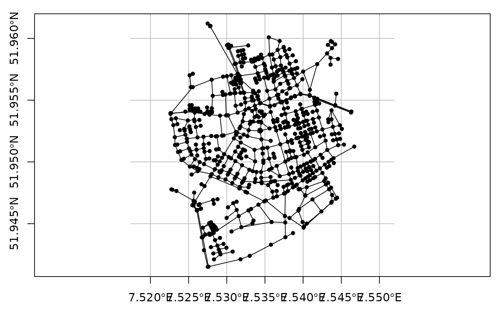

Plot the geometries of an object of class sfnetwork.
# S3 method for sfnetwork
plot(x, draw_lines = TRUE, ...)Arguments
Details
This is a basic plotting functionality. For more advanced plotting,
it is recommended to extract the nodes and edges from the network, and plot
them separately with one of the many available spatial plotting functions
as can be found in sf, tmap, ggplot2, ggspatial,
and others.
Examples
oldpar = par(no.readonly = TRUE)
par(mar = c(1,1,1,1), mfrow = c(1,1))
net = as_sfnetwork(roxel)
plot(net)
# When lines are spatially implicit.
par(mar = c(1,1,1,1), mfrow = c(1,2))
net = as_sfnetwork(roxel, edges_as_lines = FALSE)
plot(net)
plot(net, draw_lines = FALSE)
# Changing default settings.
par(mar = c(1,1,1,1), mfrow = c(1,1))
plot(net, col = 'blue', pch = 18, lwd = 1, cex = 2)
 # Add grid and axis
par(mar = c(2.5,2.5,1,1))
plot(net, graticule = TRUE, axes = TRUE)

par(oldpar)
# Add grid and axis
par(mar = c(2.5,2.5,1,1))
plot(net, graticule = TRUE, axes = TRUE)

par(oldpar)